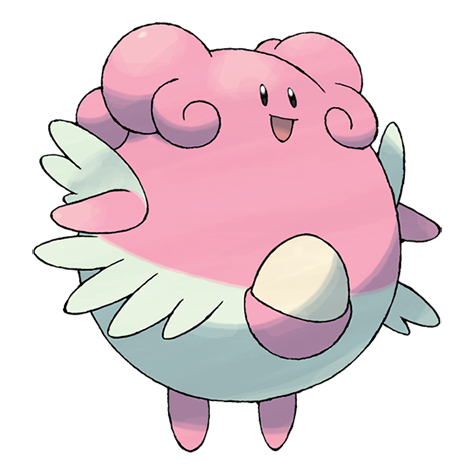

MI QR PERSONAL

COMPAÑERA DE AVENTURAS
PARQUE ARBOLEDAS · DEL VALLE, CDMX
Tu comunidad. Tus aventuras. Un sello a la vez.

COMPAÑERA DE AVENTURAS
RECUERDOS QUE SE COLECCIONAN
12 meses · Un sello por mes. Toca cualquiera para probarlo.
AVENTURAS EXTRAORDINARIAS
Tres sellos adicionales. Tócalos para descubrir su diseño y probar el check-in.
Reúne los 12 sellos mensuales y los 3 especiales para completar tu ArboPass.
PANEL DE PRUEBA
Prueba cómo tu equipo agregaría un sello al ArboPass.